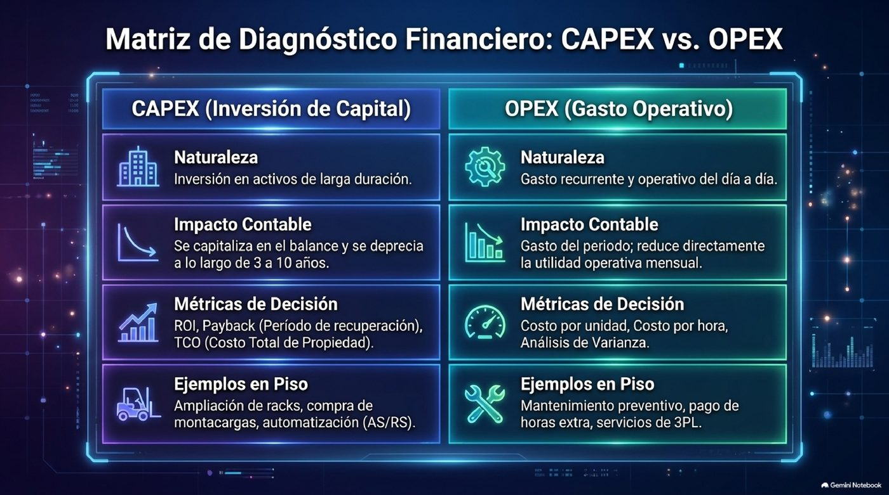
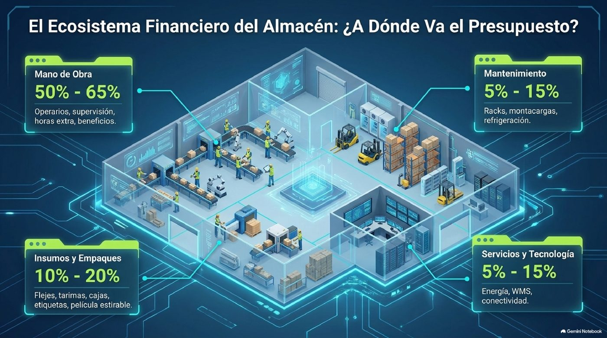
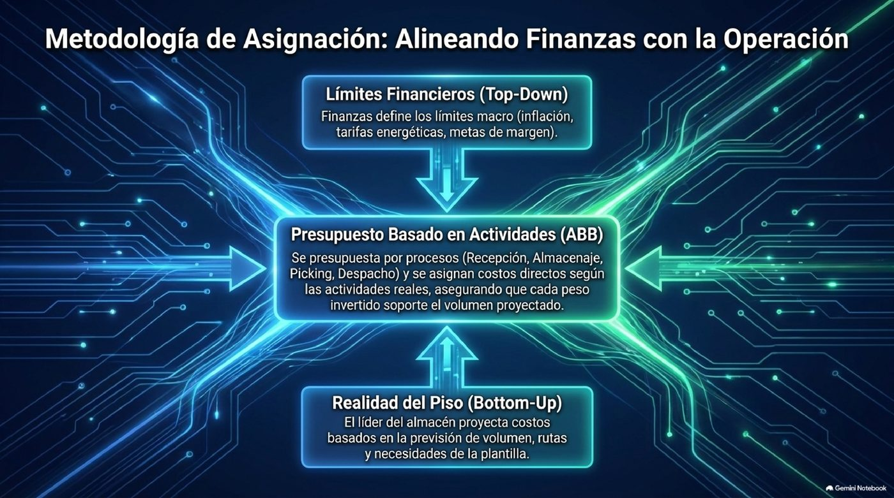
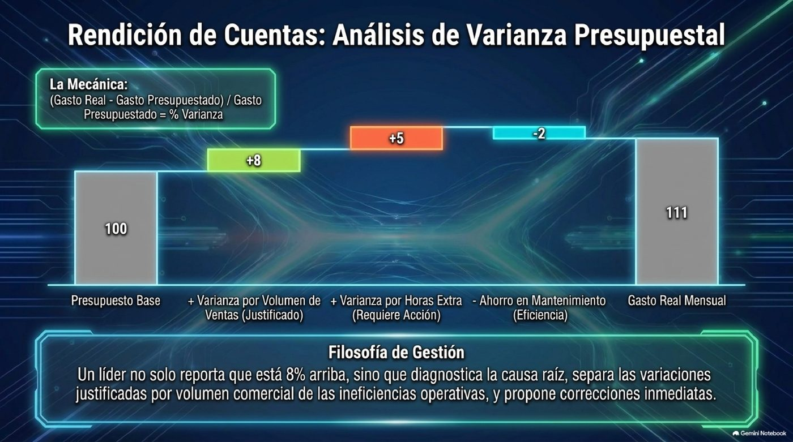
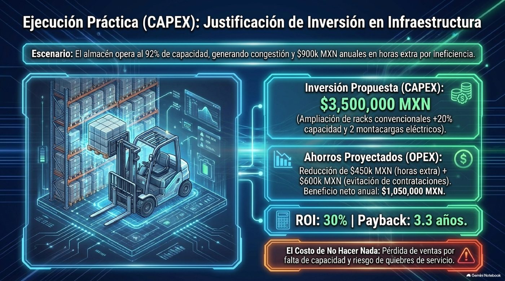
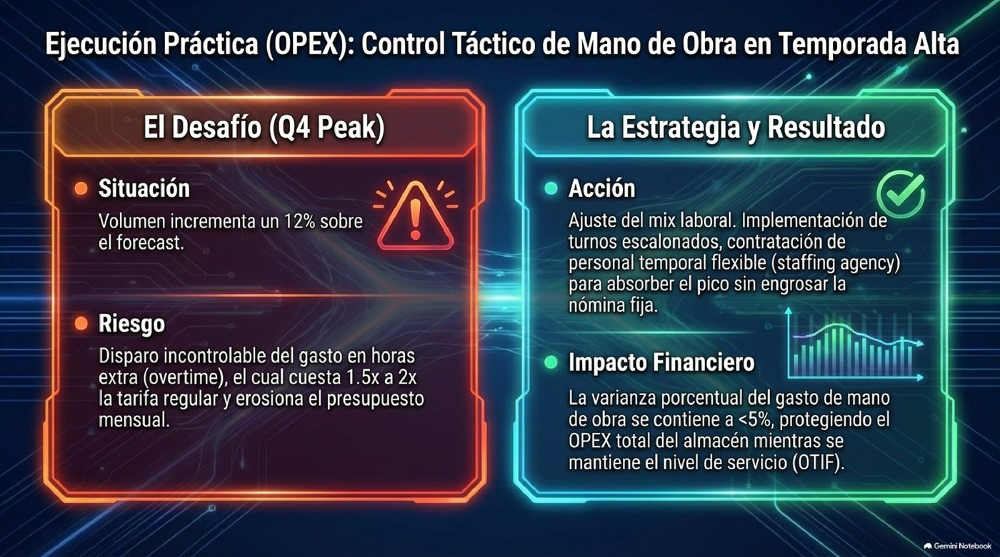
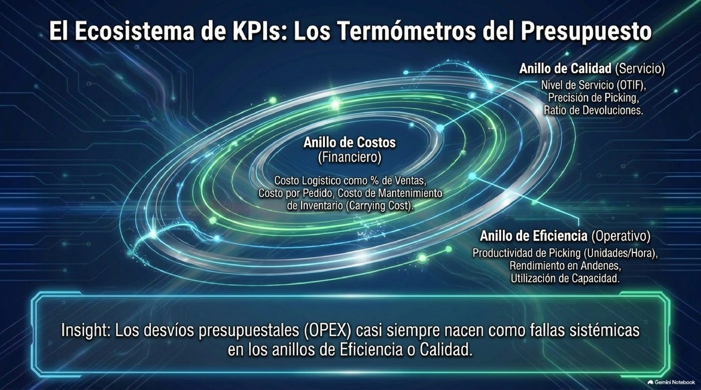
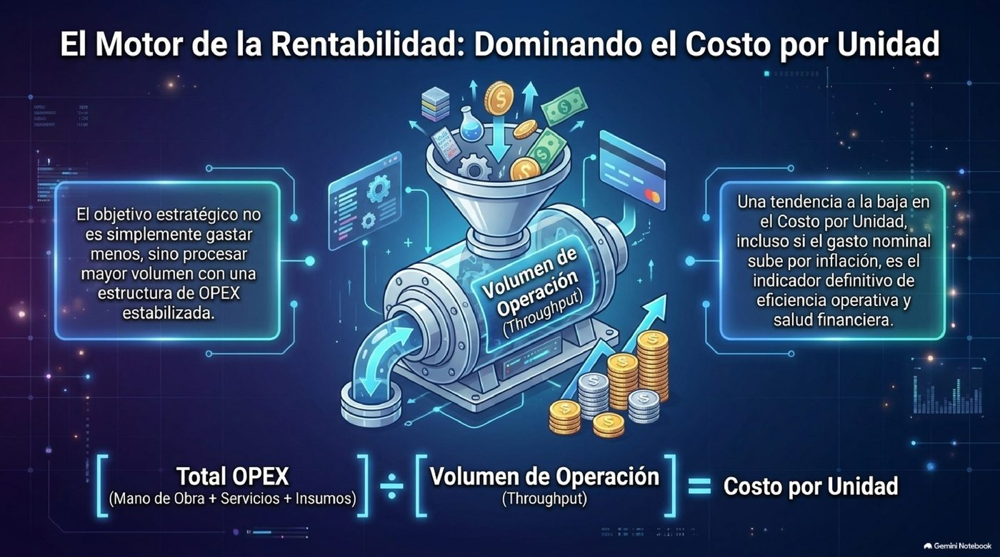
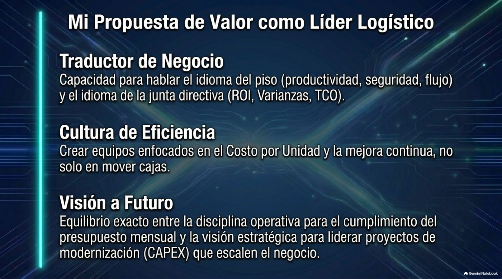
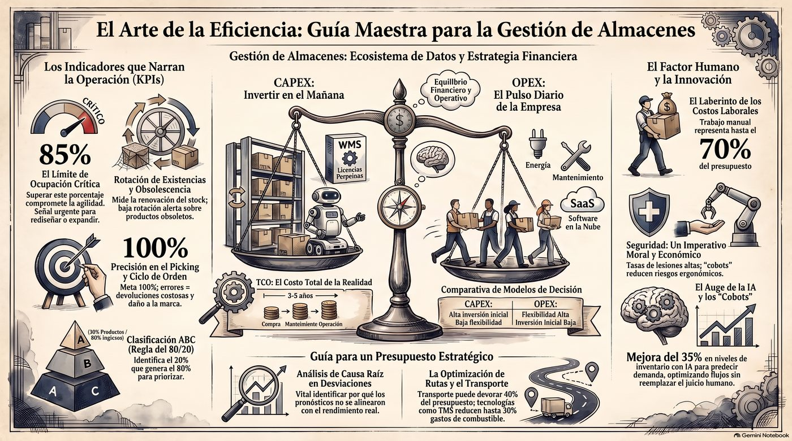

Tipos de presupuesto en almacén
Un jefe de almacén de nivel gerencial administra tres presupuestos con lógica distinta — y debe saber defender cuál es cuál ante dirección.
Gasto recurrente diario
Lo que mantiene la operación funcionando mes a mes.
- Mano de obra directa e indirecta
- Insumos: flejes, pallets, film, EPP
- Mantenimiento preventivo/correctivo
- Servicios: energía, WMS, seguridad
- Fletes internos, mermas, seguros
Sub-OPEX, control aparte
Tan crítico que se gestiona con seguimiento propio.
- Horas regulares vs. extra (5–15% del total)
- Overtime cuesta 1.5x–2x la tarifa regular
- Se liga a productividad: líneas/hora, pedidos/hora
- Costo MO = (Hrs reg × costo/hr) + (Hrs extra × costo/hr extra)
Beneficio a varios años
Se gestiona como proyecto, no como gasto corriente.
- Infraestructura: racks, mezzanines, naves
- Montacargas, transpaletas, picking por voz/luz
- Refrigeración y climatización
- WMS, RFID, automatización (AS/RS)

| Concepto | OPEX operativo | Mano de obra | CAPEX |
|---|---|---|---|
| Horizonte | Corto plazo (mensual/anual) | Corto plazo, sensible a volumen | Largo plazo (3–10 años) |
| Impacto contable | Gasto del periodo | Gasto del periodo | Activo en balance; se deprecia |
| Control | Seguimiento mensual | Semanal/quincenal | Por proyecto, hitos, ROI |
| Flexibilidad | Ajustable en el año | Muy ajustable (turnos, temporal) | Difícil de modificar ya aprobado |
| Métricas clave | Costo/orden, costo/m² | Costo/hora, costo/unidad | ROI, payback, TCO, NPV |

Planeación y control del presupuesto
Cómo se asigna el presupuesto anual, cómo se controla la desviación real vs. presupuestado, y con qué frecuencia se reporta.
Cómo se asigna
- Lineamientos de Finanzas — inflación, tarifas, crecimiento de ventas
- Histórico + plan de negocio — gasto real del año anterior, ajustado por volumen esperado
- Enfoque — top-down, bottom-up, o ABB (por actividad)
- Consolidación y aprobación — se desglosa por mes, considerando estacionalidad
Frecuencia de reporte
- Semanal: horas reg. vs. extra, productividad, incidencias de mantenimiento
- Mensual: estado de resultados por categoría, variaciones %, costo/unidad, avance CAPEX
- Trimestral: revisión de supuestos, re-forecast, ROI de proyectos en operación
En entrevista: tablero mensual Budget vs. Actual con semáforo por categoría y causa raíz en desviaciones >5–10%.

Fórmulas clave

Justificación de proyectos CAPEX ante gerencia
Estructura de una propuesta de inversión sólida, qué espera ver un director, y los errores que hunden una presentación de presupuesto.
1 · Contexto y problema
+2 · Solución propuesta
+3 · Análisis financiero — ROI y Payback
+4 · Riesgos, mitigación y alternativas
+
Errores comunes que evitar
Caso práctico completo
Jefe de Almacén en Aguascalientes · 12M unidades/año · 10,000 m² · 6 montacargas · OPEX anual asignado: $18,000,000 MXN
Distribución mensual con estacionalidad
Meses bajos (feb–abr, ago–sep): 7–8% del anual. Meses pico (nov–dic): 9–10%. Noviembre = $1,800,000 (10% del OPEX).
Desviación detectada en noviembre
MO real: $1,150,000 vs. $1,080,000 presupuestado.
Causa raíz
Volumen 12% arriba de lo planeado + 2 montacargas fuera de servicio → más horas hombre y overtime.
Acciones tomadas
Ajuste de programación de turnos para diciembre, aceleración de reparación de montacargas (o justificación de reemplazo como CAPEX), negociación con agencia de personal temporal.

Proyecto de mejora: ampliación de racks + 2 montacargas
Almacén al 92% de capacidad → congestión, picking más lento, overtime alto.
$450K
Ahorro por reducción de overtime ($900K → $450K/año)
$480K
Ahorro equivalente a evitar 4 contrataciones por mayor productividad
$120K
Ahorro por reducción de errores y mermas
Mejores prácticas y KPIs financieros
Benchmarks de industria y los indicadores que un jefe de almacén de nivel gerencial debe dominar y monitorear.

Benchmarks de referencia
- Costo logístico total: 8–15% de ventas netas
- Carrying cost de inventario: 15–30% del valor anual
- Rotación de personal en el sector: ~50% anual
- WMS puede subir productividad hasta 25%
- TMS puede reducir combustible hasta 30%
KPIs financieros a dominar
- Costo logístico por unidad
- Costo por pedido / por línea
- Costo de mano de obra por unidad
- % de variación presupuestal (meta: ±5%)
- ROI post-implementación de proyectos CAPEX
- Costo por m² de almacén

Propuesta de valor para la entrevista

Traductor de negocio
Capacidad de hablar el idioma del piso y el idioma de dirección en la misma conversación.
Cultura de eficiencia
Equipos enfocados en costo por unidad y mejora continua — no solo en mover cajas.
Visión a futuro
Disciplina operativa para el presupuesto mensual + visión estratégica para liderar CAPEX que escale el negocio.
